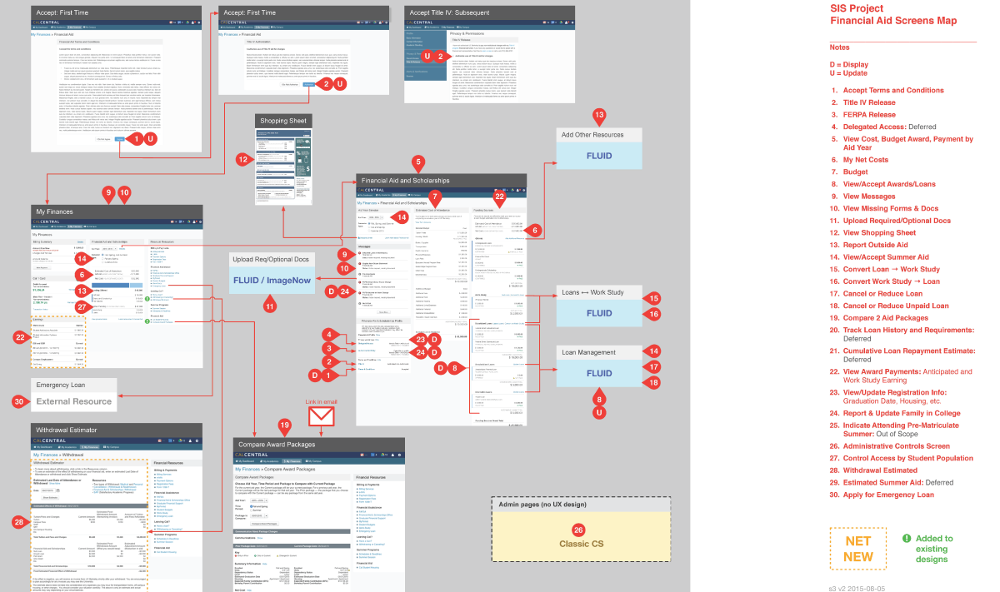
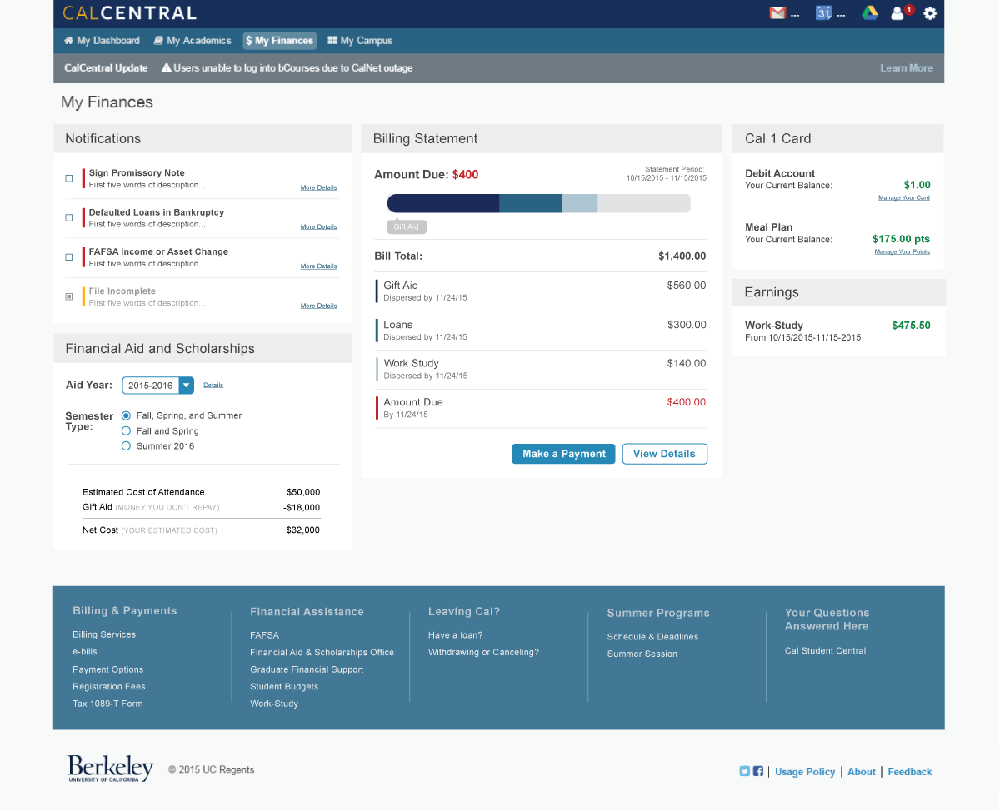

Berkeley Student Information Systems
User Interface, User Experience, User Research, & Interaction Design
The Student Information Systems (SIS) Project is Berkeley’s initiative to replace the aging and disparate student systems. The SIS Project needed help merging billing and financial aid into a single, smooth student experience.
As a UI/UX designer on a team of two other student designers, Cassidy Hsieh and Tim Guan, I provided a design proposal and prototype of a tool that helps students understand the relationship between their bill and their financial aid.



